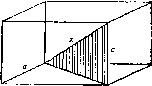

……
“你看，对角线是个线段，就是直线的一段。你从来没有解决过一个未知
数是直线长度的问题?”
“当然，我们曾经解决过这样的问题，例如找出直角三角形的一个边。”
“好啊 ! 这里有一个知你的问题有关的问题，且早已解决，你能利用它
吗？”
“你真走运，你想起了一个与你当前问题有关的问题，而且这个问题你以
前已经解决了。你愿意利用它吗?为了能利用它，你能否引进某个辅助元素?”
图1
“看这里，你所想起的是一个关于三角形的问题。图中有三角形吗?”
我们希望这最后的提示已明白得足以诱发出解题的思路(即引入一个在图
1中用阴影画出的直角三角形)。这个引入的直角三角形的斜边就是我们所要求
的对角线。但是教师应当对下述情况有所准备：即使这样明白的提示也不能使
学生开窍，那么他应当动用所有越来越明显的提示。
“你是否想在图1中有个三角形?”
“在图中，你想有哪种三角形?”
“你现在还不能求出这对角线；但你说过你能求出三角形的一个边。那么
现在你该怎么办呢?”
“如果对角线是三角形的一个边，你能找出它吗?”
经过或多或少的帮助后，学生终于成功地引进了决定性的辅助元素，即图
中阴影三角形，在鼓励学生进入实际计算之前，教师应确信其学生对问题的理
解已有足够的深度。
“我想，画出那个三角形是个好主意，你现在有了个三角形，但是你是否
有未知数?”
“未知数是三角形的斜边，我们可用毕达哥拉斯定理去计算它”
“如果两边为已知，你会计算。但它们是已知的吗?”